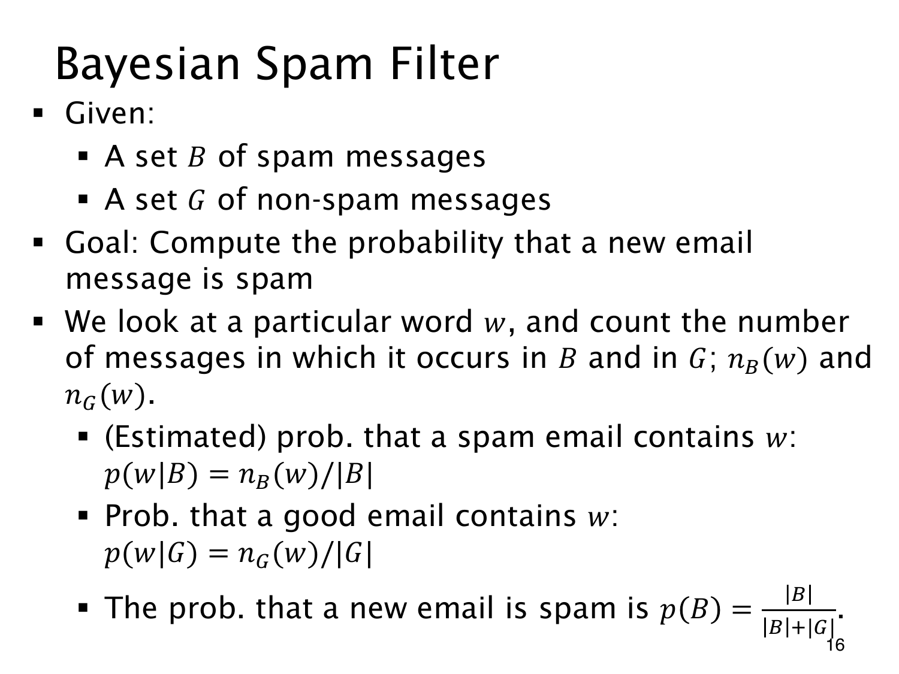

L1.10 · 第 16 页讲解原文
查看这一页课件

按邮件封数估计词的概率
已有标记好的垃圾邮件集合 B 和正常邮件集合 G。现在观察一个词 w，用它判断新邮件属于垃圾邮件的概率。
令 nB(w)、nG(w) 分别为两类中含词 w 的邮件封数，便可估计
p(w∣B)=∣B∣nB(w),p(w∣G)=∣G∣nG(w).
概率式中的 w 指“邮件包含词 w”这个事件。同一封邮件出现十次，也只计一封；这里不能用总词频除以邮件数。
若样本中的类别比例代表未来邮件，还可估计先验
p(B)=∣B∣+∣G∣∣B∣,p(G)=1−p(B).
这只是基于样本的建模估计。若训练集被人为平衡，样本比例便未必是真实先验，需要重新考虑。
p(w∣B) 回答“垃圾邮件中出现这个词”的概率，过滤所需的“出现这个词的邮件是垃圾邮件”则是 p(B∣w)，要用 Bayes 反推。B,G 在这里兼作样本类别与事件记号；∣B∣ 是集合大小，nB(w) 是频数，两者的比值才是概率估计。